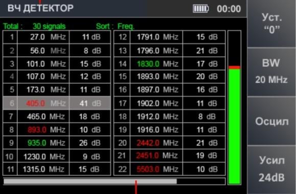
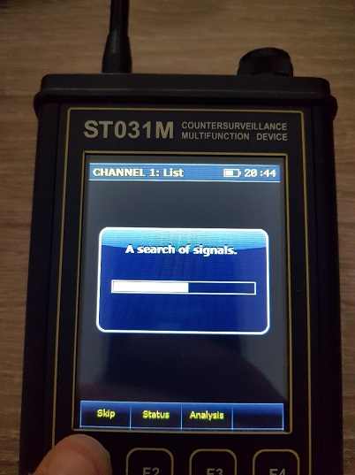
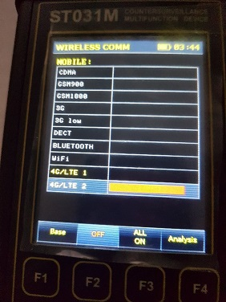

")
Test of capabilities of ST-031M Piranha part 1
Device ST-031M “Piranha“ is designed for detection of various types of eavesdropping devices, which use Radio, Digital , power supply lines as a channel of information transmission.
Device ST-031M "Piranha" as three channels of operation:
Channel 1 – Selective HF detector
Channel 2 – Scanning receiver
Channel 3 – Low-frequency amplifier. Also used for operation using additional acessories ( magnetic antenna, directional antennae, etc.)
To test the Channel 1 of the device we will need:
Multifunctional Advanced Simulator ST-121
Channel 2 – Scanning receiver
Channel 3 – Low-frequency amplifier. Also used for operation using additional acessories ( magnetic antenna, directional antennae, etc.)
To test the Channel 1 of the device we will need:
Multifunctional Advanced Simulator ST-121

The device ST-121 is small dimension device designed to imitate operation of almost all types of bugging devices, such as: RF microphone, Hardwire, Carrier current, Optical, Ultrasonic.
Using this device we can test following parameters:
"HF-SHF" socket
Frequency range, MHz 100-6000
Frequency-tuning step, kHz 10, 100, 1000, 10000, 100000
Signal level, dBm -42 – +14*
Stray harmonics, dBm
100-200MHz -15
200-700, 1100-1500MHz -45
800-1000, 1600-6000MHz -30
Signal Sinusoidal, DSSS ,FHSS, PULSE
Modulation AM, FM
Data transmission standards imitation GSM, 3G, DECT, WLAN, BLUETOOTH
Modulation frequency, kHz 0.5, 1, 1, 5, 15
АМ depth, % 70
FM Deviation, kHz 5, 20, 100, 300, 600
Nonlinear distortion of modulating signal, no more than, % 15
FHSS Bandwidth of Hopping, MHz 1, 6, 10, 20, 50, 100
FHSS Number of Hopping Channels 25, 50, 125, 250
FHSS Frequency of hopping, Hz 1, 2, 4, 8
DSSS Bandwidth, MHz 0.3, 0.5, 1, 2, 4
PULSE Signal transmission time, sec 0.0001- 99
PULSE Signal accumulation time, sec 0.01-5999
*Variation range depends on signal frequency and selected standard
"RJ-45" socket
Frequency range, kHz 0.01-20000
Maximum signal amplitude, V 3.5
Modulation AM, FM, PWM
Modulation frequency, kHz 0.5, 1, 1, 5, 15
АМ depth, % 15
FM Deviation, kHz 5, 20, 100, 300
Frequency of PWM signal, Hz 1, 10, 40, 100
PWM Duty cycle 1, 5, 10
"220V" socket
Frequency range, kHz 30-20000
Maximum signal amplitude, V 3.5
Maximum input voltage, V 380
Modulation FM, DSSS
Modulation frequency, kHz 0.5, 1, 1, 5, 15
FM Deviation, kHz 5, 20, 100, 300
Frequency of PWM signal, Hz 1, 10, 40, 100
PWM Duty cycle 1, 5, 10
Let us proceed to testing.
To begin working with the device, attach the antenna to CH1 socket as shown on the picture

To switch the device ON ,turn the tumbler regulator switch to the right.
As soon as the device switches ON, on the screen the name of the manufacturer and version of the firmware is shown. See picture below.
As soon as the device switches ON, on the screen the name of the manufacturer and version of the firmware is shown. See picture below.
To enter the main window of the device press ENTER button.
In the main menu of the device You will see:
SELECT CHANNEL Battery charge indicator Time
Channel 1 (F1)
Channel 2 (F2)
Channel 3 (F3)
Settings (F4)
To enter Channel 1 (Wideband receiver) press F1 or ENTER
In the main menu of the device You will see:
SELECT CHANNEL Battery charge indicator Time
Channel 1 (F1)
Channel 2 (F2)
Channel 3 (F3)
Settings (F4)
To enter Channel 1 (Wideband receiver) press F1 or ENTER
Please note that the readings on the screen may vary due to different technogenic situation.
After we enter the main menu of the CHANNEL 1 on the screen we can see following
Name of the channel battery charge indicator time
Range of the receiver 140MHz-4420MHz
Step 40MHz Means the scrolling the marker every 40 MHz throughout the diapason
Marker frequency: 2300 Means that currently the maker is set at this frequency
db power of the signal
140Mhz 2280 MHz 4420MHz - diapason
The line below means that we can spread out or reduce the view of the diapason
Below are shown the main sub-modes of the device, which are:
Diff. mode
FIND
Wireless Comm
Fix. Freq.
TEST 1 Differential mode
In Differential mode all the received signal meanings are taken as zero and if a new signal appears it will be shown on the screen in yellow color.
For correct use of differential mode in the device it is necessary for the operator to exit the premise and turn the diff. mode ON. On the picture below we see that the screen has changed color and the readings will look like picture below:
On the “Tester” we switch into radio channel and set to 1250 MHz
As we enter the premise and approach the radiating zone the scale of the selected frequency will change.
As we enter the premise and approach the radiating zone the scale of the selected frequency will change.
Please see picture below what happens
To be more precise we move the marker to the part that is under question and zoom in using UP DOWN arrows on the device.
On the picture below you will see the necessary signal.
Afterwards we can go to fixed frequency mode and try to localize the origin of the signal.
TEST 2 AUTOMATIC mode (FIND)
After switching the device ON and entering CHANNEL 1. The operator can choose automatic detection mode (button F2 “FIND”)
After switching in to the Automatic detection mode a table will appear as shown below, meaning that the device is scanning all frequencies in the diapason from 140 MHz – 4420 MHz, please picture below:
TEST 2 AUTOMATIC mode (FIND)
After switching the device ON and entering CHANNEL 1. The operator can choose automatic detection mode (button F2 “FIND”)
After switching in to the Automatic detection mode a table will appear as shown below, meaning that the device is scanning all frequencies in the diapason from 140 MHz – 4420 MHz, please picture below:

After the scan is done, a table will appear, and on the screen you will see following reading (readings may vary from the technogenic situation of the surrounding area)
One the screen you can see, the following: Time Battery charge Channel name: List
Total number of detected signals
Table with frequencies/ signal power/ assigned digital standard
Line of signal fluctuation
Skip Status Analysis
The below mentioned hotkeys mean following:
Skip – The operator can skip the unnecessary signal and remove it from the current list
Status – Operator can change the status of the signal unknown(white) / safe(green) / alert (red)
Analysis - Operator can analyze the selected frequency and determine, whether the signal is radio or digital, tune up more precisely to the necessary frequency. Please see picture below:
Total number of detected signals
Table with frequencies/ signal power/ assigned digital standard
Line of signal fluctuation
Skip Status Analysis
The below mentioned hotkeys mean following:
Skip – The operator can skip the unnecessary signal and remove it from the current list
Status – Operator can change the status of the signal unknown(white) / safe(green) / alert (red)
Analysis - Operator can analyze the selected frequency and determine, whether the signal is radio or digital, tune up more precisely to the necessary frequency. Please see picture below:
On the screen you can see following information: Time Battery charge indicator Name of the mode
Frequency
Bandwidth: 1 MHz
Set “0” – means that from this precise place the operator can start his “search”.
OSC(Oscilloscope) – in this mode the operator can determine, whether the signal is radio or digital
Save changes – lets the operator to save the selected tuned up signal in to the table
Back to list- exit from the analysis mode
Methodics of detection using analysis mode
To begin detection in analysis mode (Fixed frequency mode) it is necessary to select the necessary mode.
In manual mode we select Fix. Freq (Fixed frequency) mode by placing the blue marker on the necessary partition in the general table of received signals and press F4.
Frequency
Bandwidth: 1 MHz
Set “0” – means that from this precise place the operator can start his “search”.
OSC(Oscilloscope) – in this mode the operator can determine, whether the signal is radio or digital
Save changes – lets the operator to save the selected tuned up signal in to the table
Back to list- exit from the analysis mode
Methodics of detection using analysis mode
To begin detection in analysis mode (Fixed frequency mode) it is necessary to select the necessary mode.
In manual mode we select Fix. Freq (Fixed frequency) mode by placing the blue marker on the necessary partition in the general table of received signals and press F4.
Practical detection of the signal emitter ST-121
For example: Lets’ select on the emitter a random frequency (f.e 1020 MHz) with the output power of +17 dBm .
Next we press the button F2 and enter automatic detection mode.
On the table we see the number of signals and we must check all unknown signals with high output power marked White. Upon stumbling on the signal with a high output power, press F3 to analyze it.
Please see the explanation pictures below:
For example: Lets’ select on the emitter a random frequency (f.e 1020 MHz) with the output power of +17 dBm .
Next we press the button F2 and enter automatic detection mode.
On the table we see the number of signals and we must check all unknown signals with high output power marked White. Upon stumbling on the signal with a high output power, press F3 to analyze it.
Please see the explanation pictures below:
Pic 1
Pic2
Pic3
Pic4
If the signal is too strong then it is necessary to press”0” F1 button.
Pic5
So the closer we get to the origin of the signal, the level will rise.
Pic6
When we approach the origin of the signal, its peak might look like this.
Pic7
In this situation the operator operator will have to visually observe the area of inspection. If it is impossible to find the placement of the eavesdropping device the operator can use a non linear junction detector for a more precise localization.
USING WIRELESS COMM. MODE
Wireless comm. or Wireless communications allows the operator to search for already pre-set digital standards, such as CDMA, GSM 900, GSM 1800, 3G, 3G low, DECT, Bluetooth, Wi-Fi, 4G/LTE 1, 4G/LTE 2, with pre-set digital standards.
Determine Base tower signals in Base mode. And insert your own signals in to the device using the USER LIST sub-mode.
Let us test it and see what happen.
TEST 3 testing the Wireless. Comm. Mode
USING WIRELESS COMM. MODE
Wireless comm. or Wireless communications allows the operator to search for already pre-set digital standards, such as CDMA, GSM 900, GSM 1800, 3G, 3G low, DECT, Bluetooth, Wi-Fi, 4G/LTE 1, 4G/LTE 2, with pre-set digital standards.
Determine Base tower signals in Base mode. And insert your own signals in to the device using the USER LIST sub-mode.
Let us test it and see what happen.
TEST 3 testing the Wireless. Comm. Mode
1. From main menu press F3 , the device will switch following screen
2.To switch in to Base station mode, press F1 , on the screen you will see following information
3.To switch in to User list, press F1 once again.
Note: The user list in the device ST031M”Piranha” can be edited by connecting the device to the PC, using a specialized cord provided in the delivery set of the device.
To switch off the unwanted signals , while searching for cellular signal, the operator has the opportunity to switch off the unnecessary signals by pressing F2.
To switch off the unwanted signals , while searching for cellular signal, the operator has the opportunity to switch off the unnecessary signals by pressing F2.
Please see examples below.
By pressing F3 you can turn everything ON.
Same procedure can be done in Base station sub-mode.
To work correctly with the User list it is recommended, to connect it to the PC via USB.
TEST 3.1 Cellular Signals
To test the capabilities of the devices’ detection using Wireless Comm.
To Enter the Wireless comm. Mode. It is necessary to enter Channel 1 and while in there, press F3.
Take the Tester ST-121 and test all the standards one by one. Results are shown below:
CDMA
Same procedure can be done in Base station sub-mode.
To work correctly with the User list it is recommended, to connect it to the PC via USB.
TEST 3.1 Cellular Signals
To test the capabilities of the devices’ detection using Wireless Comm.
To Enter the Wireless comm. Mode. It is necessary to enter Channel 1 and while in there, press F3.
Take the Tester ST-121 and test all the standards one by one. Results are shown below:
CDMA
GSM900
3G
DECT
BLUETOOTH
Wi-Fi
4G/LTE1

4G/LTE2

Please note that the shown frequencies are pre-set and can be changed according to the frequency standards of the country.
To enter the BASE station readings, Press F1
On the Emitter we selected following standards GSM 900, GSM 1800, 3G, DECT
The result will be like this:
To enter the BASE station readings, Press F1
On the Emitter we selected following standards GSM 900, GSM 1800, 3G, DECT
The result will be like this:
Please note that the readings will differ in every area, due to different techno genic situation.
The USER LIST of the device gives the opportunity to insert the necessary frequency for the inspection of the premise or make a list of frequencies.
To enter User List mode, press F1. The menu window will look like this:
The USER LIST of the device gives the opportunity to insert the necessary frequency for the inspection of the premise or make a list of frequencies.
To enter User List mode, press F1. The menu window will look like this:
APENDIX 1
Wireline type Leakage threat |
PBX office lines |
PBX outer city lines |
Computer networks |
Alarm system |
Transmission |
Power Lines |
| Galvanically connected parallel devices that do not use the line as a transmission channel |
3,4, 6,8 |
3,4, 6,8 |
3,4, 6,8 |
|||
| Galvanically connected serial device that does not use the line as a transmission channel |
3,4, 6,8 |
3,4, 6,8 |
3 - Wire non linear juction detector ST300
4 - Reflectometer ST300
6 - Non linear junction detector ST402/403
APPENDIX 2
Working with the PC.
Connect your device to the PC using USB cable from the delivery set of ST-031M Piranha
Install the program provided on the USB with the device to this directory:
C:\Program Files (x86)\Smersh Technics\ST031M – Piranha
The main screen will look like this
To change the language of the display, go to Настройки(Settings) and select English language.
Please note that the About us button is for developers only, tampering with the device may result in device malfunction.